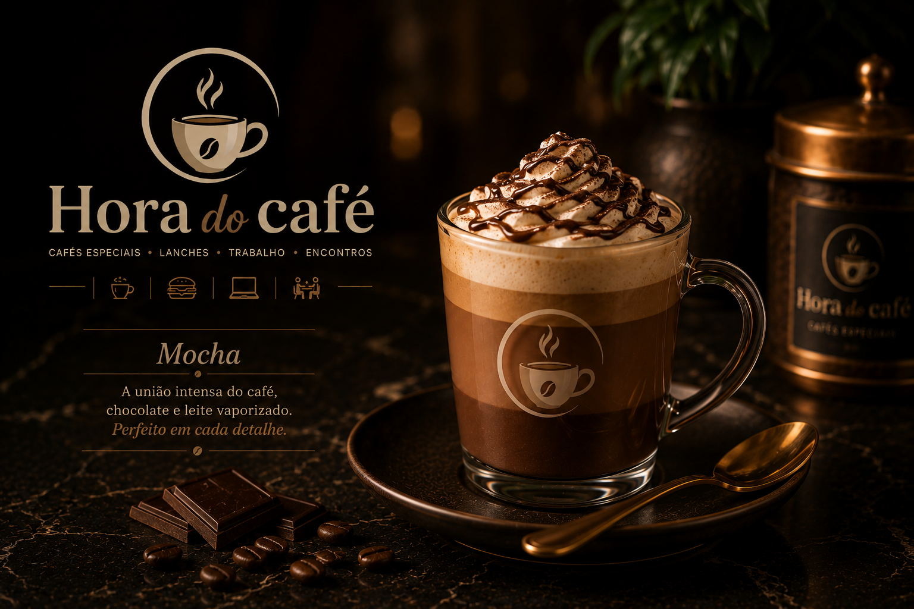
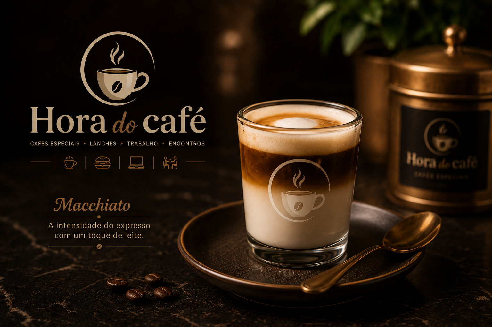
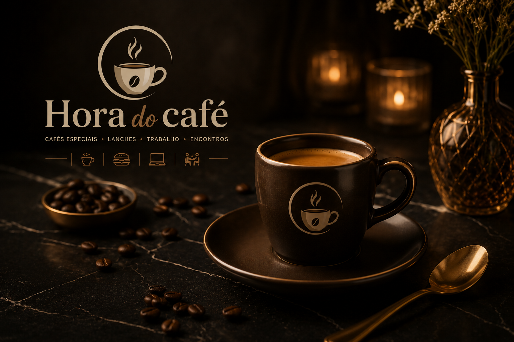
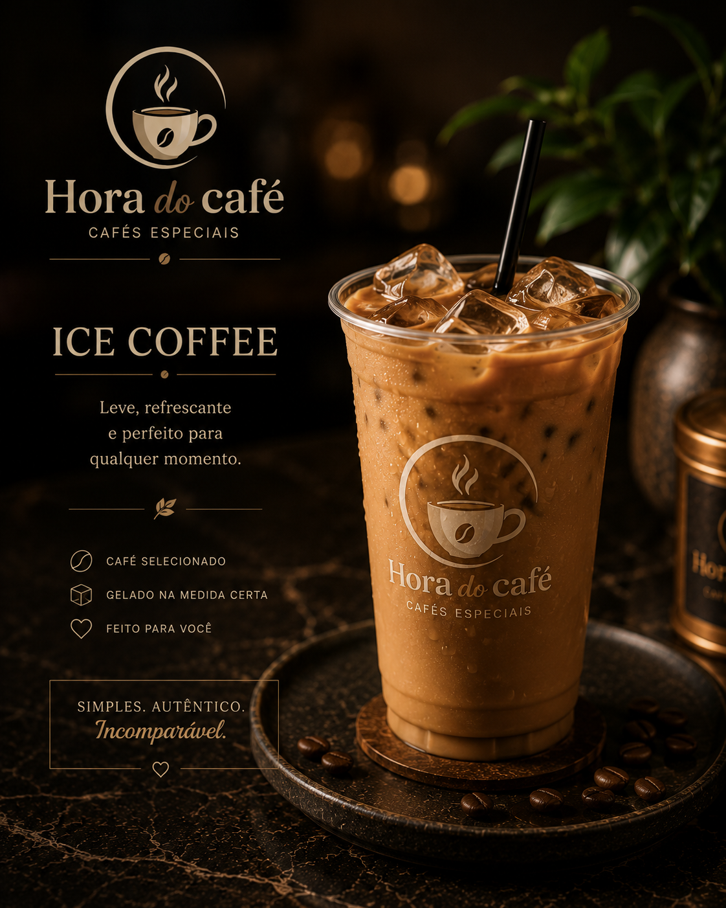
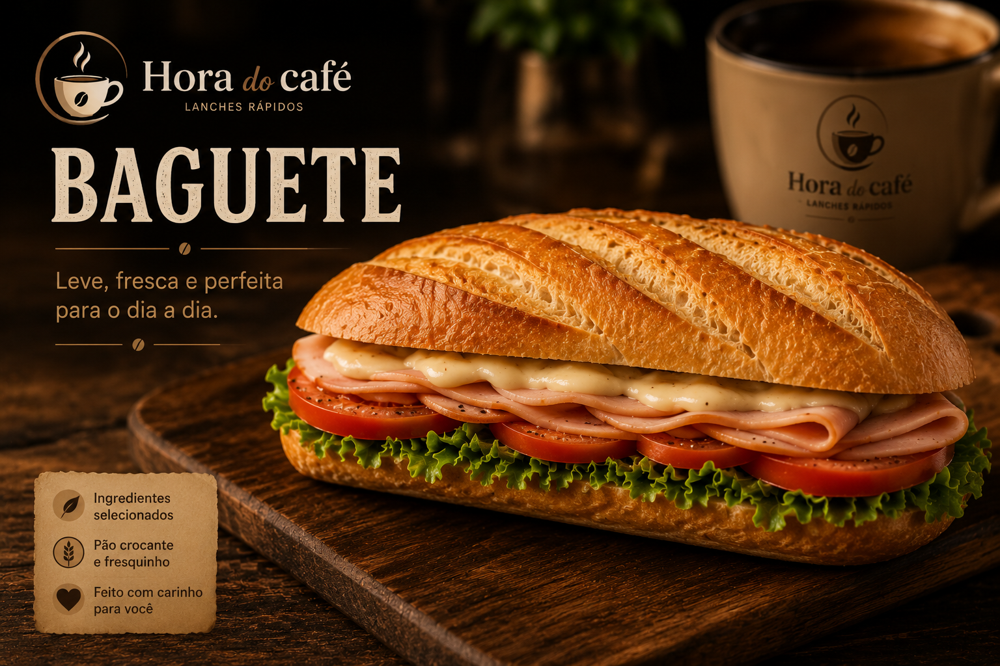
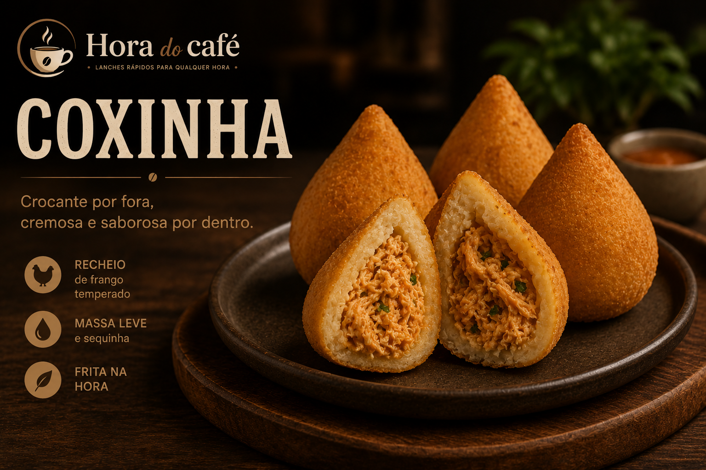
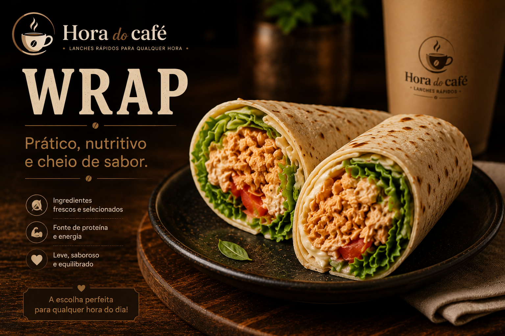

Historia do Cafe em Apucarana

A história do café em Apucarana faz parte da identidade da cidade e do desenvolvimento do norte do Paraná. Conhecida pelo “ouro verde”, a região cresceu impulsionada pela produção cafeeira nas décadas de 1950 a 1970. Mesmo após a histórica Geada Negra de 1975, a tradição do café permaneceu viva entre produtores e famílias locais. Hoje, Apucarana se destaca pela produção de cafés especiais e grãos de alta qualidade reconhecidos nacionalmente. Na Hora do Café, valorizamos essa tradição, oferecendo sabor, aconchego e experiências únicas em cada xícara.
Cafés especiais

Mocha cremoso com a combinação perfeita de café, chocolate e leite vaporizado.
Cafés especiais

Macchiato intenso e equilibrado, com espresso marcante e um toque suave de leite.
Cafés especiais

Espresso encorpado e aromático, preparado na medida certa para realçar o sabor do café.
Cafés especiais

Ice Coffee refrescante e cremoso, perfeito para aproveitar o sabor do café gelado a qualquer momento.
Lanches

Baguete crocante recheada com ingredientes frescos e saborosos, perfeita para qualquer hora do dia.
Lanches

Coxinha crocante por fora e recheada com frango cremoso e muito sabor.
Lanches

Wrap leve e saboroso, recheado com ingredientes frescos e combinações irresistíveis.